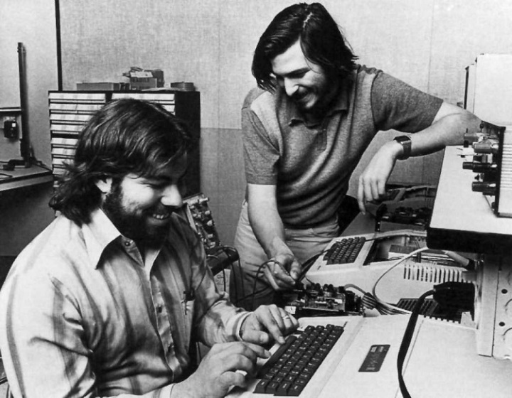

Thời niên thiếu (1972-1985)
Sau chuyến đi đến Ấn độ( năm 1974), Steve Jobs đã sỡ hữu được một trực giác tuyệt vời từ những trải nghiêm thiếu thốn tại những ngôi làng nghèo của Ấn Độ. Nhờ vậy Jobs có được nền tảng cho những đột phá và thành công sau này. Trở về quê nhà, Jobs bắt đầu tham dự các cuộc họp của Câu lạc bộ máy tính Homebrew năm 1975. Năm 1976 Jobs đã giúp Wozniak ( một người cũng tham gia CLB Homebrew với Jobs) phát minh ra máy tính Apple I. Hai nguời sau đó đã cùng Ronal Wayne thành lập Apple Computer trong gara nhà. Sau một thời gian ngắn gặp phải khó khăn Wayne rời đi đê lại Jobs và Wozniak tiếp tục gây dựng công ty.
 Hình 5: Jobs và người cộng sự
Sau rất nhiều khó khăn, năm 1977 Apple tung ra sản phẩm Apple II, một thành quả to lớn đã làm nên tên tuổi của công ty còn non trẻ Apple. Năm 1980 Jobs và Wozniak trở thành triệu phú. Họ đã phát triển công ty lên tầm cỡ quốc tế với cả ngàn nhân viên khắp toàn cầu. Steve Jobs muốn một người cùng quản lý công ty Apple cùng mình nên đã thuyết phục giám đốc điều hành Pepsi khi đó là John Scully: “ ông có muốn dùng cả đời mình bán thứ nước có đường đó hay là muốn có cơ hội thay đổi thế giới?”. Năm 1983, John Suclley thay thế Jobs làm giám đốc điều hành. Do 2 người có những hướng đi khác nhau trong việc điều hành nên Apple lâm vào tình trạng khó khăn, hội đồng quản trị lại đứng về phía Sculley. Năm 1985 Jobs từ bỏ công ty mặc dù năm 1984 Apple đã đưa ra một sản phẩm gây tiếng vang là máy tính cá nhân Macintosh.
 Coppyright: Team NMDT :)
Biên tập, thiết kế , xây dựng và quản trị: TEAM ANONYMOUS
Coppyright: Team NMDT :)
Biên tập, thiết kế , xây dựng và quản trị: TEAM ANONYMOUS